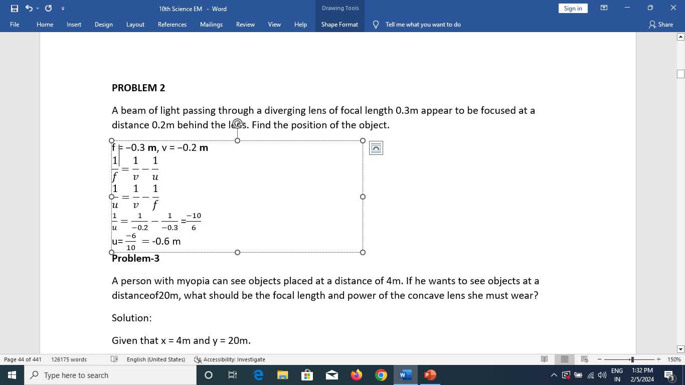

PROBLEM 2
A beam of light passing through a diverging lens of focal length 0.3m appear to be focused at a distance 0.2m behind the lens. Find the position of the object.

Problem3
A person with myopia can see objects placed at a distance of 4m. If he wants to see objects at a distanceof20m, what should be the focal length and power of the concave lens she must wear?
Solution:
Given that x = 4 meter and y = 20 meter.
Focal length of the correction lens is f = x into y divided by x minus y refer equation . 2.7
f = 4 multiply by 20 divided by 4 minus 20 = 80 divided by minus 16 = minus 5 meter
Power of the correction lens = 1 by f = minus 1 by 5 = minus 0.2 Diaptor
Problem4
For a person with hypermetropia, the near point has moved to 1.5m. Calculate the focal length of the correction lens in order to make his eyes normal.
Given that d=1.5 meter , D=25centimeter =0.25meter (For a normal eye)
From equation 2.8, the focal length of correction lens is
f = d in to D divided by d minus D = 1.5 multiplied by 0.25 divided by 1.5 minus 0.25 = 0.375 divided by 1.25 = 0.3 meter.